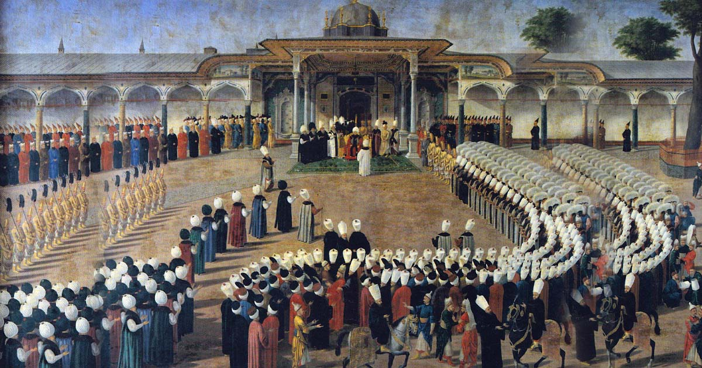
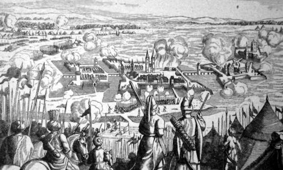

Cum a început declinul Imperiului Otoman?
Declinul Imperiului Otoman nu a fost cauzat de un singur eveniment, ci de o combinație de probleme interne și schimbări majore în economia și politica mondială.

Dacă ne gândim la decăderea Imperiului Otoman, trebuie să analizăm mai întâi de unde a început acest proces. Mulți istorici atrag atenția asupra sultanilor slabi care au urcat pe tron după moartea lui Suleiman Magnificul, începând cu Selim al II-lea, cunoscut și sub numele de „Selim Bețivul” sau „Selim Blondul”. El a fost primul sultan asociat cu ceea ce unii istorici numesc perioada de stagnare a Imperiului. Totuși, în timpul domniei sale nu s-a simțit imediat lipsa unui conducător implicat în problemele politice și militare, deși a fost primul sultan otoman care nu a participat personal la nicio campanie militară.
Este clar că acest lucru a afectat, într-o anumită măsură, stabilitatea statului, însă eu nu consider că aceasta a fost principala problemă. Deși, sub conducerea lui Selim al II-lea, autoritatea sultanului a început să scadă în favoarea ienicerilor (trupele de elită ale Imperiului), iar conducerea efectivă a fost exercitată în mare parte de marele vizir Sokollu Mehmed Pașa și de soția sultanului, Nurbanu Sultan, Imperiul a continuat să se descurce bine atât din punct de vedere financiar, cât și politic.
Cred că o vină mai mare o poartă unii dintre sultanii care au urmat după Selim al II-lea și care au pierdut aproape complet controlul asupra statului. Printre aceștia se numără Osman al II-lea, ucis de propriii săi ieniceri după ce a încercat să reformeze această instituție, sau Ibrahim I, despre care se crede că suferea de probleme psihice serioase și care a fost, în mare măsură, un conducător-marionetă, influențat de mama sa și de marele vizir. Totuși, nu voi intra acum în detalii despre viața acestor personaje istorice; acesta este un subiect pentru altă dată.
Probabil că unul dintre factorii care au încetinit și, în cele din urmă, au oprit ascensiunea Imperiului Otoman a fost descoperirea Americii în 1492. După acest eveniment, marile puteri creștine europene, precum Anglia, Franța și Spania, și-au construit vaste imperii coloniale în Lumea Nouă. Comerțul cu resursele și produsele provenite din America, printre care porumbul și, mai târziu, cartoful, a contribuit semnificativ la dezvoltarea economică a acestor state.
Imperiul Otoman a participat foarte puțin la acest comerț transatlantic. Abia spre sfârșitul secolului al XIX-lea a început să dezvolte relații comerciale mai consistente cu continentul american, însă la acel moment nu mai era o mare putere comparabilă cu marile imperii europene.
Acest conflict de lungă durată dintre puterile creștine și cele musulmane a fost decis, în cele din urmă, în mare măsură de resursele economice. Este foarte greu, poate chiar imposibil, să indicăm un singur moment istoric în care soarta Imperiului Otoman și, într-o anumită măsură, soarta lumii s-au schimbat definitiv. În realitate, au existat mai multe momente-cheie care au contribuit la acest rezultat.

Printre acestea se numără primul asediu al Vienei din 1529, al doilea asediu al Vienei din 1683 și Asediul de la Szigetvár din 1566. Aceste confruntări reprezintă doar câteva exemple ale campaniilor otomane din Europa. Chiar și atunci când otomanii au obținut victorii teritoriale, așa cum s-a întâmplat la Szigetvár, armata și economia Imperiului au suferit pierderi considerabile. Acumularea acestor costuri militare, combinată cu schimbările economice și comerciale la nivel global, a contribuit treptat la slăbirea statului otoman și, în cele din urmă, la declinul său ca mare putere.